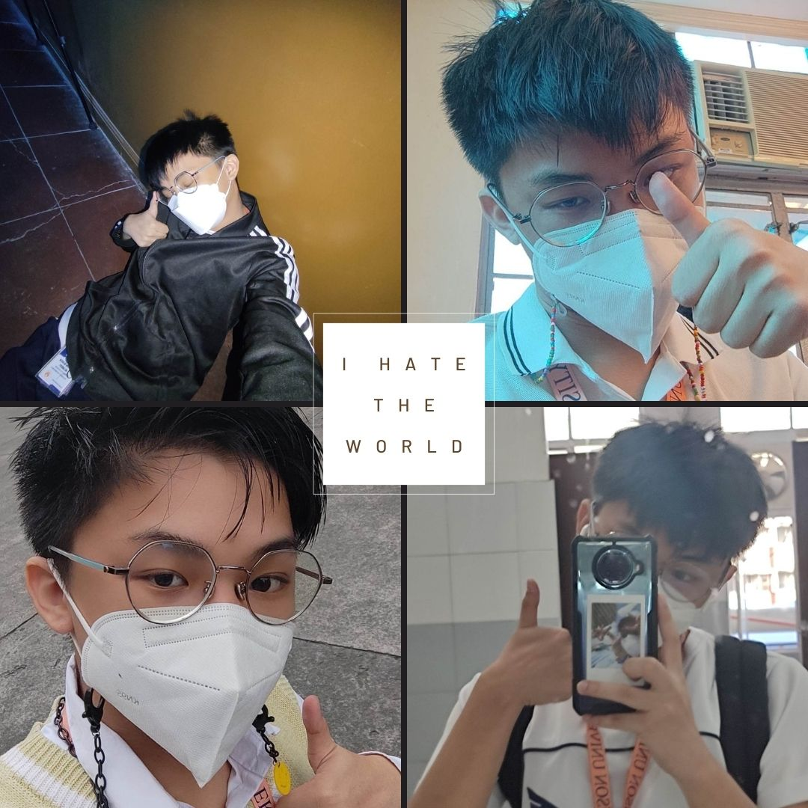
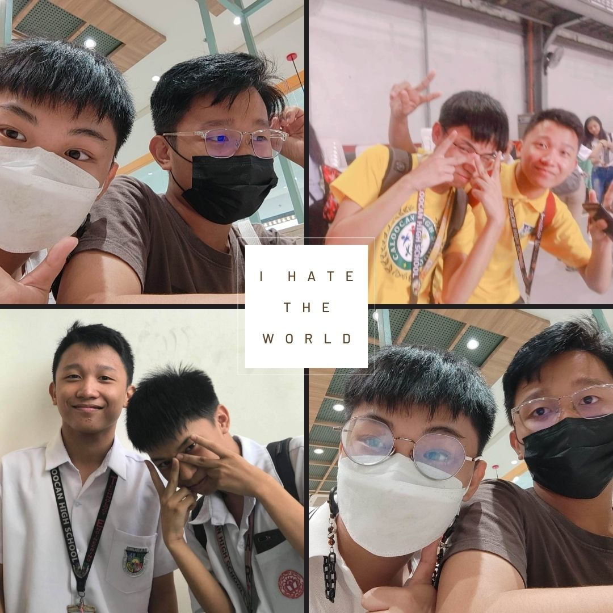
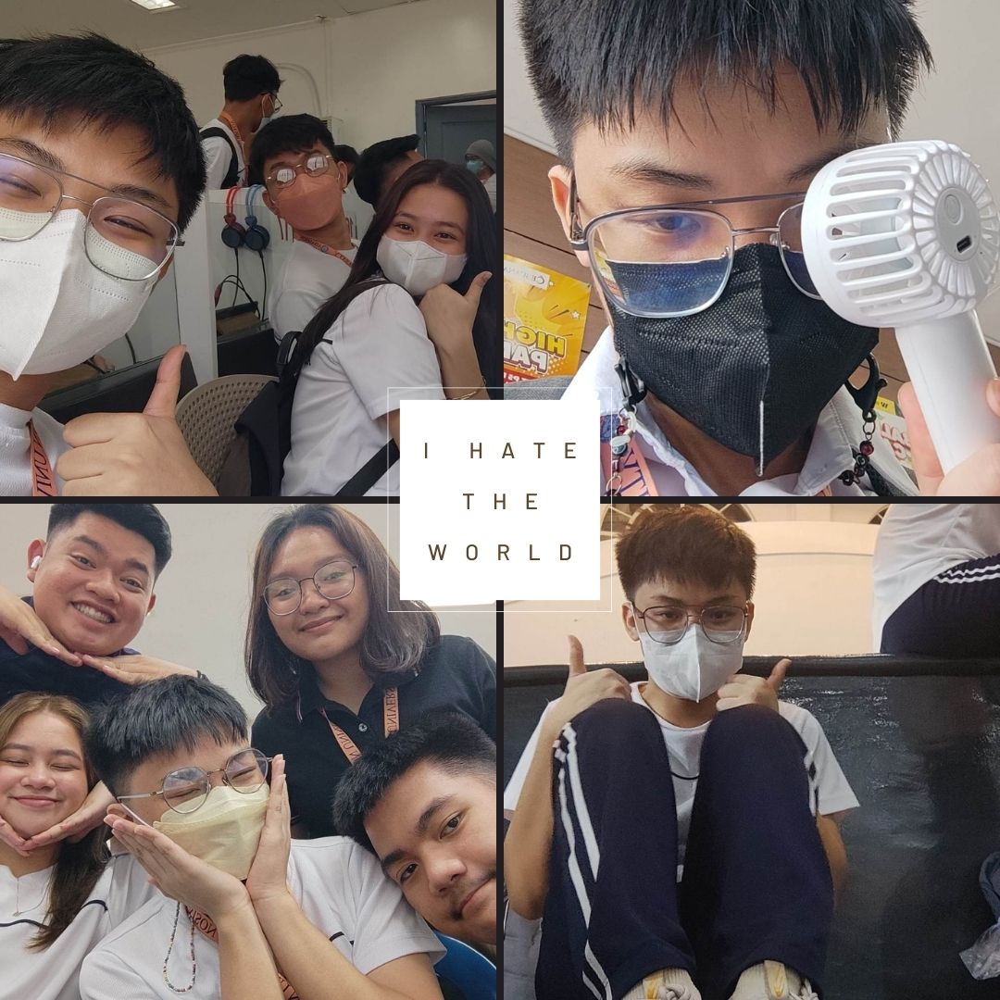

Things were not always the same as I continued my first semester. Academic difficulties struck me. Problems that I encountered while pursuing my degree. I'm turning into the person I never wanted to be. I began to procrastinate again, resulting in late submissions and failed tests and quizzes that resulted to my mental health being wors. I began to despise the world, particularly my own, as my issues consumed me. I wanted to redeem myself, and individuals that are significant in my life were extremely helpful.

A specific individual was the most supportive in dealing with the issues I had. He is really valuable to me because we have been close for about 4 years. He helped me in resolving and conquering my challenges. As the semester progressed, I addressed my anxieties and faced everything with him. I'm not sure how I'll get through the most difficult period of my life without him. He accompanied me in dealing with the most fragile problems I faced during my freshman year, particularly my mental health issues. He handled it carefully, ensuring that I was okay and comfortable with the conversation. I'm grateful to have him. And I also repay him for his support, although not in the same way, by providing him with food and other things that would make him happy, as I am. I love him so much just by existing, I am really thankful for him and I hope I will keep him forever.

Now that I'm in my second semester. I'm better and back on track; things have returned to normal and my old self, where I don't cram or procrastinate on my academics; my grades in the recent finals were also better, so I'm pleased with my development. I did contemplate and learn from my mistakes, and I am not going to make them in future endeavors. I did keep positive in order to maintain my good mental state. I must admit that I have improved and grown as a person since the last time I saw myself on the worst state of my life. I am grateful to my friends, loved ones, and, most importantly, to me.